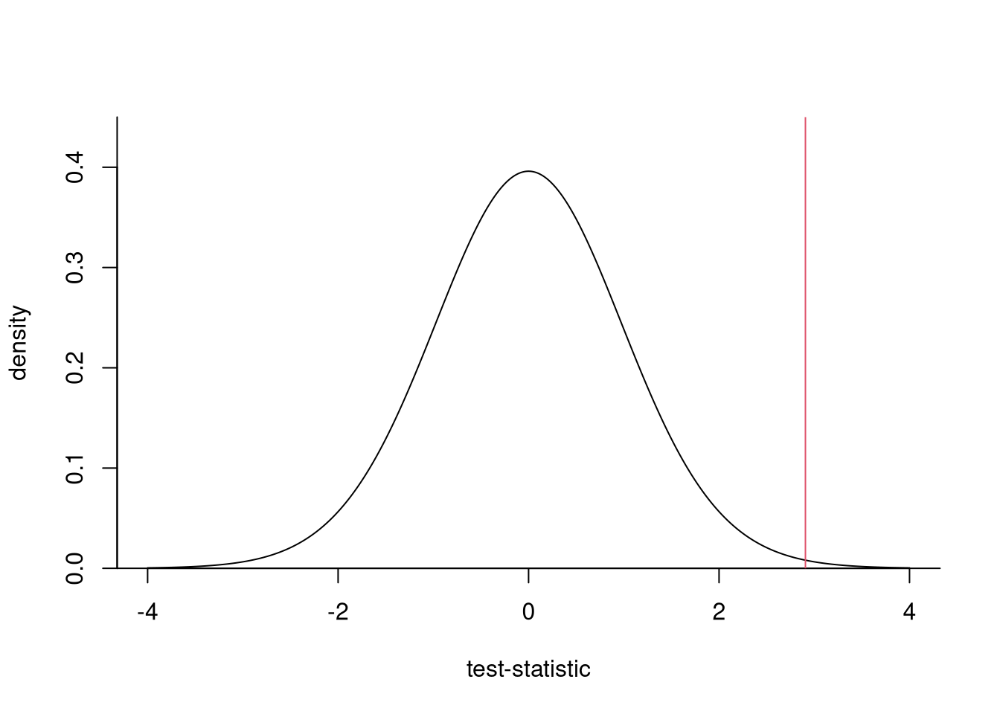

2.1 One-sample and paired t-test
We covered this example of Tech3Lab comparing the reaction time between individuals for two tasks, texting and speaking on the phone, while walking. The response variable is reaction time in seconds to the presence of a bicycle moving towards the participant.
The data can be found in distraction.txt and can be loaded in R in a data.frame object.
# get URL of the file
url <- "https://lbelzile.bitbucket.io/MATH60619A/distraction.txt"
# load data, stating header
data <- read.table(url, header = TRUE)The columns of a data.frame object can be accessed using the $ operator.
We can calculate descriptive statistics for the data by using the commands summary, or mean, sd, etc.
Our goal is to compare the average reaction time for texting t and for call c, say \(\mu_C=\mu_T\). Since the individuals complete the two assignments (the order is random), we are looking at a paired \(t\)-test, which amounts to comparing the null \(\mathscr{H}_0: \mu_D=0\), where \(\mu_D\) is the difference (in seconds) between the reaction time for texting vs phone conversation in the population. We can assess this graphically through an histogram of the distribution.
# create new vector as difference in time
D <- data$t - data$c
# histogram, on the probability scale
hist(D, probability = TRUE,
xlab = "Time difference between reaction time
for texting and call (in seconds)",
main = "")
# add density estimate
lines(density(D))
The two sample mean (standard error) are different, 1.39 (0.53) seconds for texting and 1.08 (0.4) seconds for call. To check if this is really the case, we perform a paired \(t\)-test.
##
## Paired t-test
##
## data: data$t and data$c
## t = 3, df = 34, p-value = 0.006
## alternative hypothesis: true difference in means is not equal to 0
## 95 percent confidence interval:
## 0.094 0.532
## sample estimates:
## mean of the differences
## 0.31The output provides the value of the test statistic \(t = \overline{D}/\mathsf{se}(\overline{D})=\) 2.91 with associated \(p\)-value . We strongly reject the null hypothesis that \(\mu_C=\mu_D\) at level 5% (even 1%), meaning that the reaction time is significantly longer on average for texting with an estimated 95% confidence of \([\) 0.09, 0.53 \(]\).
The null distribution of the test statistic is \(\mathcal{T}_{34}\), so we can look at how extreme our test statistic is relative to a typical value from the null distribution.

We can also do a one-sample \(t\)-test using the same function. The hours dataset consists of a sample of size \(n=100\) of workers who had attained at least a college degree. We could test whether the participants work 40 hours a week (two sided alternative), or if they work more than that. In the latter case, the null hypothesis is thus \(\mathscr{H}_0: \mu \geq 40\), where \(\mu\) is the average number of weekly work hours, against the alternative \(\mathscr{H}_1: \mu < 40\).
url <- "https://lbelzile.bitbucket.io/MATH60619A/hours.txt"
data <- read.table(file = url, header = TRUE)
ttest_twosided <- t.test(data, alternative = "two.sided", mu = 40)
ttest_onesided <- t.test(data, alternative = "greater", mu = 40)In both cases, we reject the null hypothesis at level 5%, but the one-sided alternative has a smaller \(p\)-value. Think about why it does not make sense to test for \(\mathscr{H}_0: \mu \leq 40\) versus \(\mathscr{H}_1: \mu >40\) in view of the sample mean.